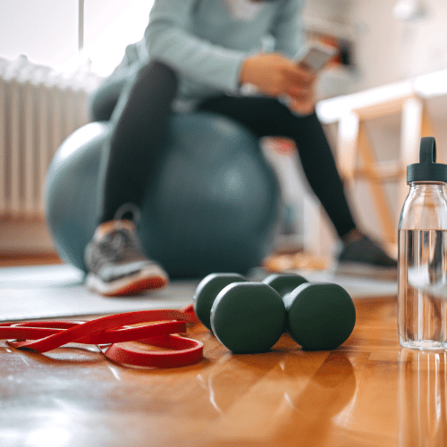
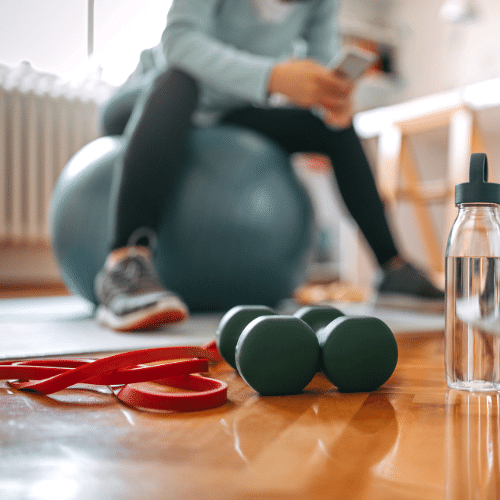
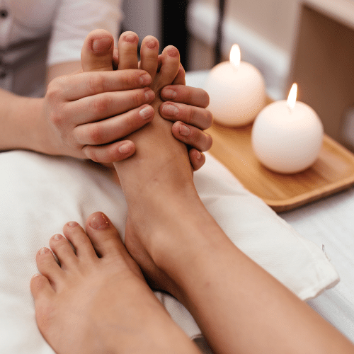
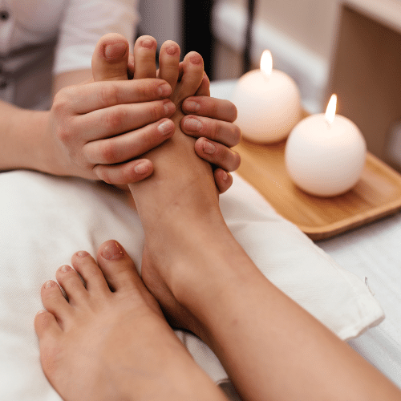

More Healing
Herbs to heal and strengthen your body are not alone in Nature's Pantry. There are many different ways that you can imporve your health. Healing the body needs to be done holistically. When healing you should work not only on your physical health but your mental and spiritual health as well. The physical, mental and spiritual parts that make up who you are, are intertwined and can not be separated from each other. If one aspect of yourself is struggling, than it affects the others and they can become sick as well. So if you are working on your physical health, it is always good practice to work on your mental and spiritual health at the same time. Here are just a few to consider
Sleep:
It is a widely known rule that a person needs at least 8 hours of sleep a night for a healthy body, but have you ever asked yourself why? Sleep is one of the key ingredients for balancing hormones, a healthy immune system, weight loss, sharp mind, healthy veins, strong heart, relieving stress, managing anxiety, and so much more. The lack of sleep is shown to increase the risk of diabetes, heart disease, and infections. If you are getting more than nine hours a night and still wake up tired, you probably have a sleeping disorder that keeps you from having restful sleep. There are many healthy alternatives to dealing with sleep disorders such as herbs in the form of teas, tinctures, and oils, exercise, honey (it may sound crazy but it works), and vitamins like calcium magnesium. Remember the old saying, "Early to bed, early to rise, Makes a man healthy, wealthy, and wise."
Exercise:
Exercise is essential to your health and wellbeing. When you exercise it releases hormones into your body called endorphins, endocannabinoids, and dopamine that give you what some like to call a "runners high". It is that feeling of euphoria or pleasure that comes after a hard workout. Exercise has been clinically proven to not only strengthen you physically but mentally, emotionally, and spiritually. When you exercise you have greater power to fight off all kinds of diseases like heart disease and diabetes, but also anxiety, depression, and other mental health problems. Exercise has been proven to improve sleep cycles, mood swings, lack of motivation, memory loss, learning disorders, attention and so much more. Exercise reduces stress and can give you more ability to handle stressful situations. It increases oxygen to your brain which improves not only memory, but strengthens your ability to focus and control yourself. Exercise builds self-confidence and improves self-esteem. So, how important is exercise for your health? Very important.
 

Meditation:
Meditation has been around for thousands of years. It is the practice of deep breathing and clearing your mind of feelings and emotions. When you meditate, you are training your brain to focus. You focus on your breathing, and listening to the air around you. To meditate you find a place where you are comfortable and feel safe. A place that is quiet and allows you to think. Some like to meditate outside in nature. I have loved to do meditation session on the top of a mountain peak after a long hike. I sit in the quiet and listen to my surroundings focusing on my breathing. A great sense of peace and clarity can come when you learn to meditate. Some like to finish their meditation exercise with a prayer of thanksgiving for their beautiful life. This will improve your spiritual health along with your mental health. Meditation has been proven to alleviate anxiety, depression, and stress. A daily meditation is recommended for a stronger, healthier, YOU.

Massage:
Massage therapy is another form of healing that has been around for thousands of years. It is the practice of soft tissue manipulation to reduce stress, improve circulation, aid in healing, boost energy, enhances immune systems, and speed up the body’s own natural healing process, improves mental health and lowers the body's stress levels. The list goes on and on. There are so many benefits to massage therapy that a weekly massage should be on your calendar indefinitely. There are different modes of massage that you can benefit from. There is infant massage, sports massage, deep tissue massage, relaxation massage, Shiatsu massage and many, many more. Even a good foot massage, called reflexology, can affect reflex points for your entire body inducing relaxation, toxin release, and relives acute pain. It can initiate labor and the passing of kidney and gallstones. Now, who wants to go get a massage! I do!
 
